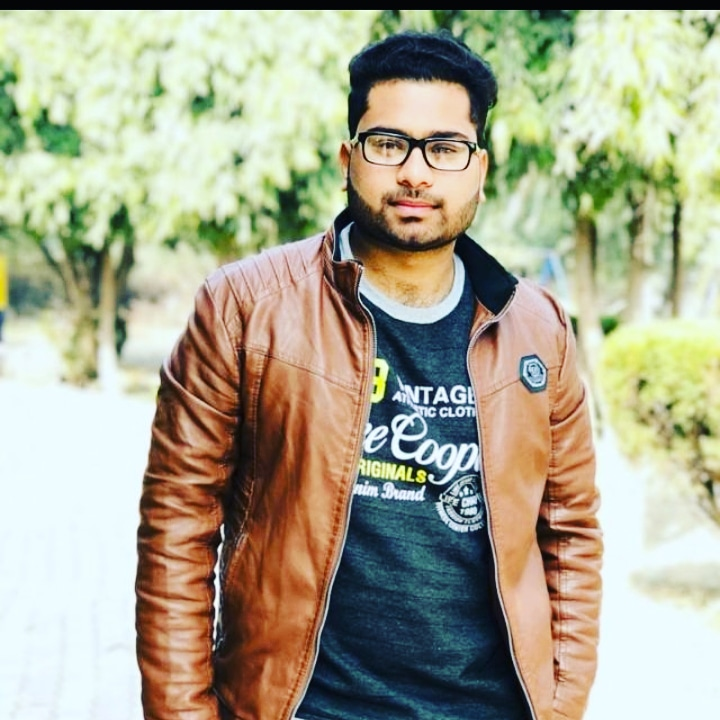

Web Developer
Address: HobbiesLearn new skills Sports Reading LanguagesEnglish: Native speaker Urdu: fluent speaker |
Chand IftikharI have completed my web development from comsats univeristy lahore campus under the supervision of sir usman akram, I have aquire skills in web development and i am currently studying in comsats university as a student of final year and doing bachelors in computer science Work experienceJunior Web DeveloperEducationI have done my matriculation from OPF public school Sheikhupura securing 85% marks with A+ grade Skills
Online Marketing
|